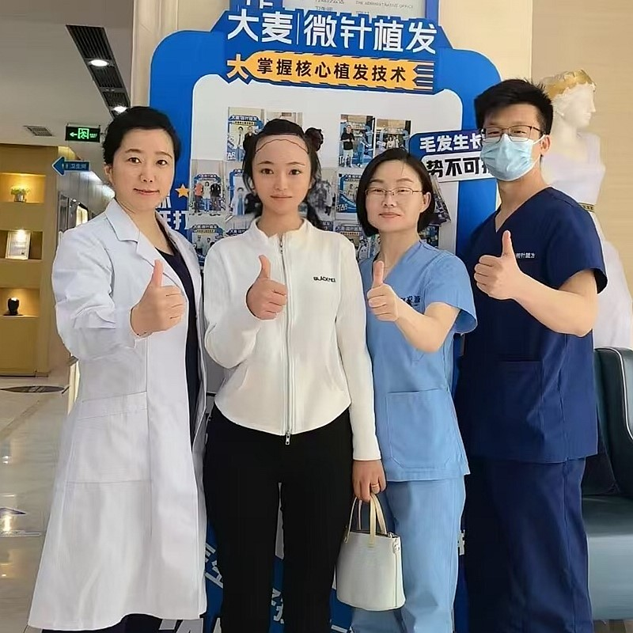

A hairline transplant is a specialized form of hair restoration that focuses on the most visible and defining feature of your face — the frontal hairline. When hair loss begins, the hairline is usually the first area to recede, making you look older than you feel. During the procedure, healthy hair follicles are carefully relocated from the back and sides of your scalp to the front, recreating the hairline you had when you were younger.
The real secret to an exceptional result lies in the design. At Barley, our surgeons invest time into carefully planning your new hairline, taking into account your age, facial proportions, ethnic background, and how your hair loss may progress in the future. A truly well-designed hairline should look natural today — and still look natural two decades from now.
Using our proprietary microneedle FUE technology, each follicle is individually extracted and implanted at precise angles that replicate your natural hair growth pattern. The single-hair grafts placed along the very front create a soft, feathered edge that is virtually indistinguishable from a natural hairline. Patients from around the world choose Barley for one simple reason: our results look so natural that even close friends and family rarely notice the difference — they just see a younger-looking you.
A gentle, curved hairline that follows the natural shape of your forehead — perfect for a youthful, approachable look.
A clean, horizontal line that gives a strong, defined appearance. A popular choice for men who prefer a structured look.
A refined design that subtly preserves the temple peaks for a distinguished, mature look that ages gracefully.
An organic, asymmetrical design that mirrors nature's randomness — the most undetectable option for patients who want absolute authenticity.
Phase 1 — Design & Planning: Your journey begins with a thorough consultation. Our surgeon examines your scalp, discusses your goals, and draws a preliminary hairline directly on your forehead. We refine the design together until you are completely happy with it. Your forehead height, eyebrow position, and facial symmetry all play a role in shaping the final result.
Phase 2 — Follicle Extraction: Using our patented microneedle FUE system, individual grafts are carefully harvested from the permanent donor zone at the back of your head. The 0.6mm micro-punch leaves only tiny dots that heal invisibly within days — so you can keep your hair short without anyone noticing.
Phase 3 — Graft Preparation: The extracted follicles are immediately placed in a specialized preservation solution and sorted under a microscope. Single-hair grafts are set aside for the front hairline, while multi-hair grafts are reserved for the area behind it where more density is needed.
Phase 4 — Recipient Site Creation: Our surgeon makes micro-incisions along the planned hairline using ultra-fine needles. Each incision is angled at 10–15 degrees to match the natural, flat-lying growth pattern of frontal hair. This step is critical — it is what makes the final result look natural rather than "pluggy."
Phase 5 — Follicle Placement: Each prepared graft is gently inserted into its designated site. The very front row receives single-hair grafts for a soft, irregular edge, while density builds gradually behind it. Every hair is placed to grow in the correct direction for a seamless, natural look.
Phase 6 — Recovery & Growth: After the procedure, you receive detailed aftercare instructions. New hair starts growing around months 3–4, with noticeable density by month 6. Your full, mature result appears between 12–18 months — a permanent, natural-looking hairline that lasts a lifetime.
Typically 800–1,500 grafts to fill in the temples and front corners. A shorter procedure with a quick recovery.
Usually 1,500–2,500 grafts to rebuild a noticeably receding hairline. This is our most commonly performed range.
May require 2,500–3,500 grafts to address significant frontal loss and rebuild a complete hairline frame.
Generally 1,000–2,000 grafts, depending on how many centimeters the hairline needs to be lowered for balanced facial proportions.
Hairline transplants in China cost 50–70% less than in the US, UK, or Europe — without compromising quality. Most international patients save thousands of dollars while receiving world-class care.
Our 0.6mm micro-punches are smaller than the industry standard, which means smaller extraction sites, faster healing, less scarring, and a more natural-looking donor area.
From your first WhatsApp message to your final follow-up, our bilingual team ensures smooth communication in English at every step. We also help with travel planning, accommodation, and airport pickup.
Custom-crafted hairline reconstruction with advanced FUE microneedle technology

Your hairline is the first thing people notice about you. Our specialized hairline transplant procedure rebuilds a natural-looking frontal hairline that restores a youthful appearance and brings back your confidence. Every graft is placed with surgical precision and artistic vision to recreate the organic irregularity of natural hair growth.
Custom-shaped to complement your face
Each graft placed by hand
0.6mm microneedle extraction
Over 95% graft viability
Tailored to your unique facial structure and personal goals
From first consultation to your new look
Custom hairline drawn based on your facial features and personal goals
Quality check of your donor area and available graft count
Gentle FUE harvesting using 0.6mm microneedle technology
Single and multi-hair grafts separated for optimal placement
Meticulous implantation with natural angle and direction
Comprehensive recovery support and 18-month follow-up program
What makes our hairline transplants the top choice for international patients
Our surgeons know that a hairline is more than just a line of hair — it frames your entire face. Every hairline is designed around your facial proportions, age, and ethnic features so the result looks like it has always been there.
Real hairlines are never a solid wall of hair. We build density gradually — starting with sparse, single-hair grafts at the very front and increasing density behind it. This graduated approach is what makes the result completely undetectable.
We design your hairline not just for how it looks today, but for how it will look in 10 or 20 years. By placing it at an age-appropriate position and preserving donor grafts for the future, we ensure your results stay natural for life.
Trusted by patients worldwide for over 18 years
Pioneering microneedle hair transplant technology since 2006
Consistent high standards across all direct-operated locations
Proprietary microneedle and implant pen technology for superior results
Trusted by patients from across the globe
Full English support for international patients throughout their entire journey
State-of-the-art facilities with strict safety protocols for your peace of mind
See the transformations our patients have achieved


Capturing the moments with our satisfied patients

Very happy with result

Couldn't be happier

Feeling amazing

Professional job
Pleased with outcome

Great choice made

Perfect transformation

Feeling wonderful
Hear from patients who chose Barley for their hairline restoration
I had 1,800 grafts to restore my receding hairline, and the results are absolutely seamless. My barber actually asked if I had always had this hairline — he had no idea it was a transplant. The single-hair grafts along the front create such a soft, natural edge that nobody can tell.
I went back to work just 4 days after my 2,200-graft procedure. By month 6, the new hair was clearly growing in. Now at 14 months post-op, my hairline looks exactly like it did when I was 22. Even my wife's closest friend said she thought I had just gotten a really good haircut!
The surgeon spent a full 45 minutes designing my hairline before the procedure even started. He considered my face shape, age, and future hair loss pattern. 2,000 grafts later, I have a hairline that will still look natural in 20 years. That level of planning really shows in the results.
I had been self-conscious about my M-shaped hairline since my early twenties. Barley gave me back a rounded, youthful hairline with 1,600 grafts. The recovery was surprisingly quick — barely any discomfort. At 10 months, the density is fantastic and the irregular front edge looks 100% natural.
The microneedle technology made all the difference. My donor area healed with barely visible tiny dots — I can still wear my hair very short. The 2,500 grafts were placed at precise 15-degree angles, so they grow exactly like my original hair. Full results at 16 months look incredible.
I compared prices from clinics in Paris and London before choosing Barley. I saved over €3,000 and got better results than I expected. 1,900 grafts, perfectly designed hairline that frames my face beautifully. The English-speaking team made the entire experience stress-free from start to finish.
Modern facilities designed for your comfort and safety

Our modern clinic

Relax in our comfortable waiting area

Sterile and fully equipped
One-on-one discussions

Rest in comfort after your procedure

Warm and welcoming entrance
Everything you need to know before your procedure
Click to copy contact information
15810155700
+86 13730143529
hairtransplant@qq.com

Everyone's hair loss journey and solution are unique due to a variety of factors. Our hair restoration experts will assist you in determining the root cause and the best solution for your hair restoration plan. If you have any questions, please ask; we are happy to assist.